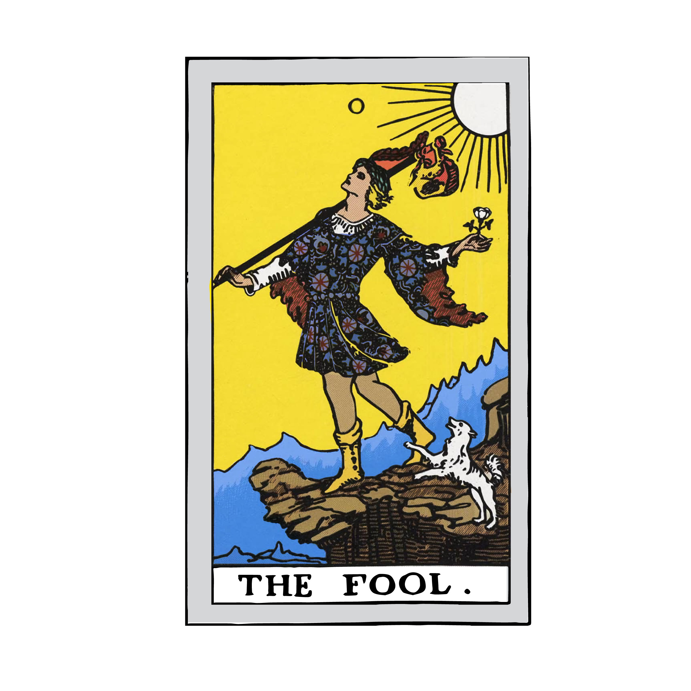
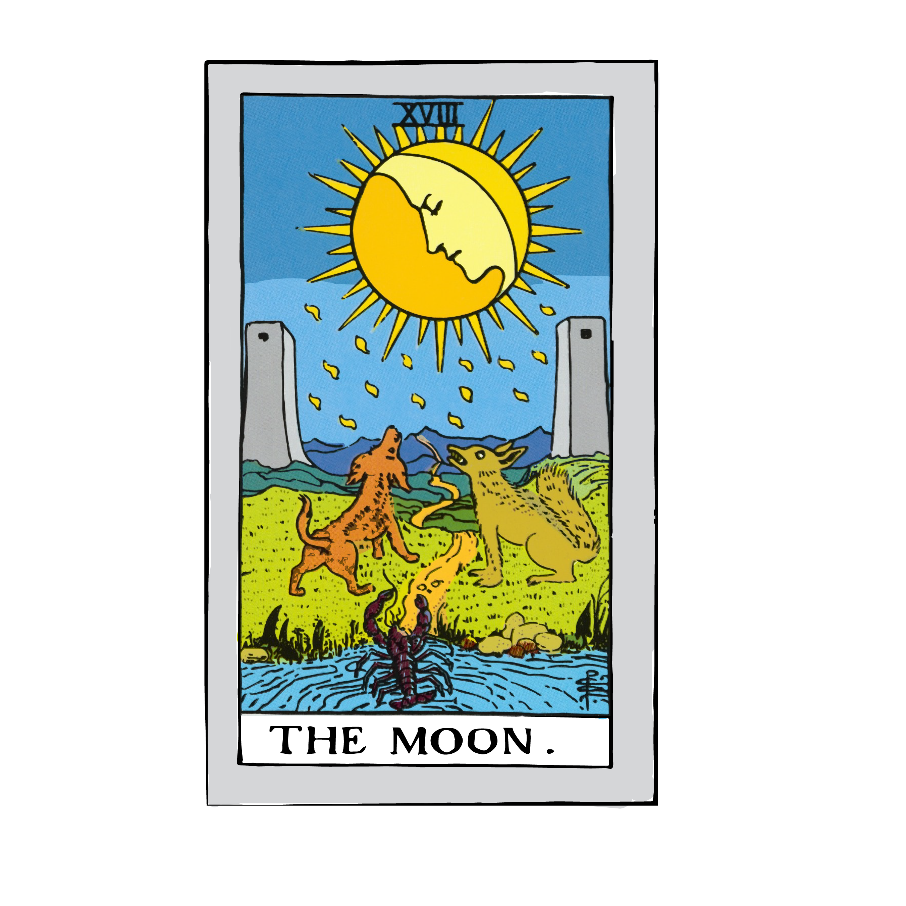
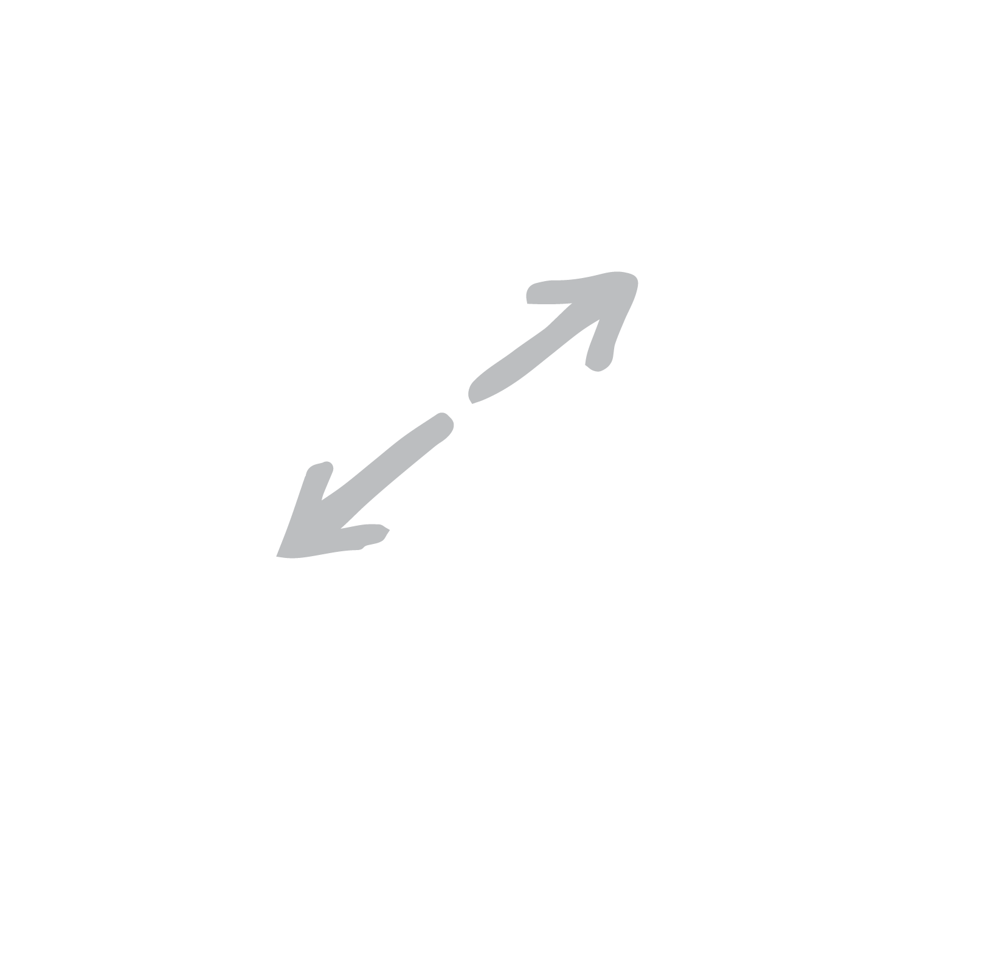
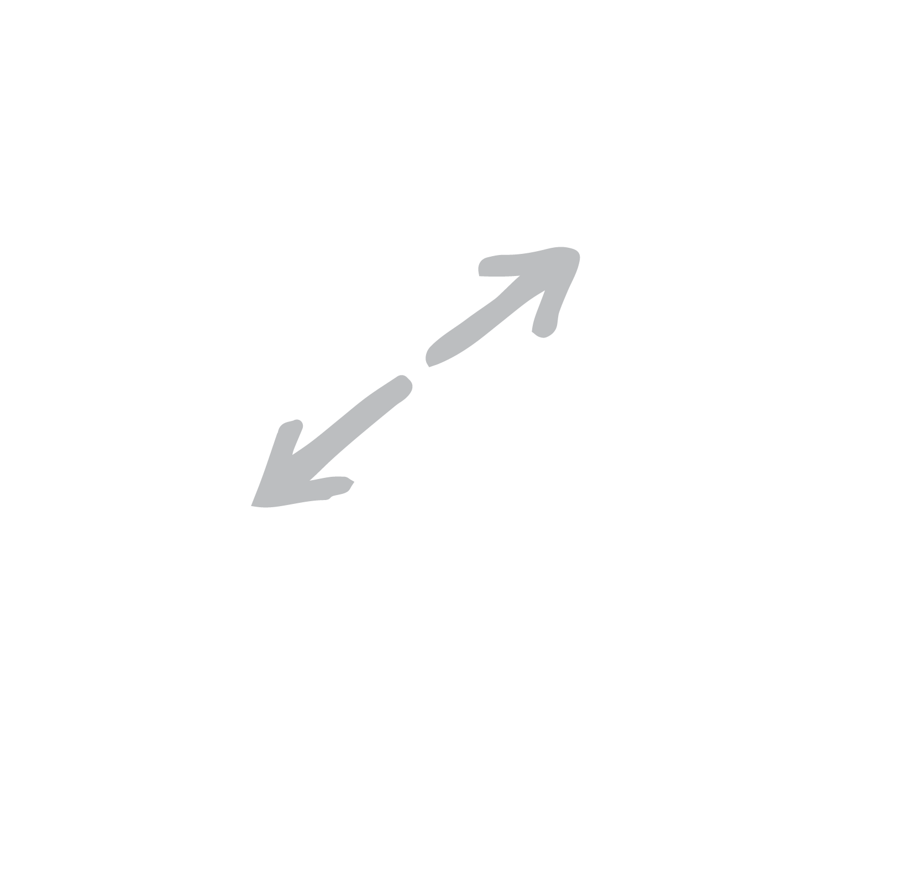

THE FOOL UPRIGHT
Beginnings, innocence, spontaneity, a free spirit
The Fool is a card of new beginnings, opportunities, and potential. Just like the young man, you are at the outset of your journey, standing at the cliff‘s edge, and about to take your first step into the unknown. Even though you don’t know exactly where you are going, you are being called to commit yourself and follow your heart, no matter how crazy this leap of faith might seem to you. Now is a time when you need to trust where the Universe is taking you.
In this journey, the Fool encourages you to have an open, curious mind and a sense of excitement. Throw caution to the wind and be ready to embrace the unknown. This is about new experiences, personal growth, development, and adventure.
The Fool ventures out on his journey with just his essential belongings – and now he invites you to do the same. You don’t need to wait for someone to give you the green light or hold off until you have all the skills, tools and resources you think you might need. You are ready! If you’ve been watching for a sign, this is it!
This is a time of great potential and opportunity for you right now. The world is your oyster, and anything can happen. Use your creative mind with a dash of spontaneity to make the most of this magical time and bring forth your new ideas in powerful ways.
Live life as though you were a child once again. Laugh more, dance, and let your heart go free.
THE FOOL REVERSED
Holding back, recklessness, risk-taking
The Fool reversed suggests that you have conceived of a new project but aren’t ready to ‘birth’ it into the world just yet. You may worry that you are not fit or that you don’t have all the tools, skills and resources you need to make this project a success. Or perhaps you have a sense that the timing isn’t right. Something is holding you back, and you are preventing yourself from moving forward. You may choose to keep this new opportunity to yourself for now, or you might be ‘parking’ it until a better time.
You may fear the unknown, wondering, ‘What am I getting myself into?’ As a result, you have come to a standstill, worried about taking any action where you don’t know the outcome. This often boils down to the need to control everything. Balance this out with knowing that the Universe has your back and you can take this step forward, even if you are unsure of exactly what will happen next.
On the flip side, the reversed Fool can show that you are taking too many risks and acting recklessly. In your attempt to live ‘in the moment’ and be spontaneous and adventurous, you may do so in total disregard of the consequences of your actions and engaging in activities that put both yourself and others at risk. Look at the bigger picture and consider how you can keep the free spirit of the Fool without harming others.
In light of the playful and fun energy of the upright Fool, the reversal suggests you are exploring this spirit on a more personal and quiet level. For example, instead of letting down your hair and dancing up on stage, you are dancing in your bedroom like no-one is watching. Look at how you can bring more play into your daily life, even if you start out by doing it in private.
JUDGEMENT UPRIGHT
Judgement, rebirth, inner calling, absolution
The Judgement card is calling you to rise up and embrace a higher level of consciousness for the service of your Highest Good. You are experiencing a spiritual awakening and realising that you are destined for so much more. This is your cosmic up-levelling! You hear the call and are ready to act. Tune in to a higher frequency. Let go of your old self and step into this newest version of who you really are.
The Judgement card often indicates that you need to make a life-changing decision, but unlike those associated with the logical Justice card, this decision requires a blend of intuition and intellect. You may be at a crossroads, aware that any choice you make will bring a significant change with long-lasting effects. Tune in to your Higher Self, trust your judgement and know you are on the right path. If you still need clarity on the situation, look to your past and life lessons to guide you.
Judgement pops up in a Tarot reading when you are close to reaching a significant stage in your journey. You have reviewed and evaluated your past experiences and have learned from them. All the pieces of the puzzle of your life are finally coming together to form one, unified picture of your life story. This integration has healed deep wounds, and you are now able to put the past behind you. You have found your absolution, having cleared any wrongdoings or regrets, and releasing any guilt or sadness about the past. This purging process will leave you refreshed and ready to take on any new challenges.
The Judgement card suggests that you may find comfort in sharing your struggles with others within a group environment. There will be others who have experienced something similar and who can show you the way to freedom from your troubles. Let them guide you and help you - rise together.
JUDGEMENT REVERSED
Self-doubt, inner critic, ignoring the call
Judgement reversed calls for a period of reflection and self-evaluation. Through meditation or quiet contemplation, you may arrive at a deep understanding of the universal themes weaving throughout your life and what you can do or change to avoid these situations. You may have kept them secret or hidden because you fear how others may judge you. To clear these past mistakes and regrets, and any associated guilt or shame, work on your self-forgiveness, self-acceptance, self-love, and release and freedom.
The Judgement reversed often appears when the Universe is trying to send you a message and invite you to something bigger, but you’re not listening. Maybe you’re afraid of the sacrifice you will need to make to heed the call, or you’re worried you are not ready to step into a more prominent role and just want to play it safe. You are doing your best to pretend you didn’t receive it and are carrying on with your daily life, hoping it will go away. But let’s be honest – the ‘call’ never goes away; it just gets louder and louder until you pay attention. It’s time to push past your inner fears and self-doubt, and trust that the Universe has your back. This is happening for a reason.
Sometimes, the reversed Judgement indicates your inner critic is coming through, loud and clear. You may doubt yourself or tell yourself negative messages. This is impeding you being able to fulfil your highest potential and be your best self. To overcome your inner critic, see it as a separate part of yourself (give it a name), hear it out and acknowledge its fear, and offer assurances that everything will be just fine. With focused discipline, you can break the cycle of self-criticism and replace it with more positive messages of what is possible.

THE MOON UPRIGHT
Illusion, fear, anxiety, subconscious, intuition
The Moon represents your fears and illusions and often comes out when you are projecting fear into your present and your future, based on your past experiences. You may have a painful memory that caused emotional distress, and rather than dealing with the emotions you pushed them down deep into your subconscious. Now, these emotions are making a reappearance, and you may find yourself under their influence on a conscious or subconscious level. For example, if you had a car accident when you were young but didn’t deal with the emotions, you may get sad or anxious every time you get into the backseat of a car. To remedy this, connect with your subconscious mind and release any fears or anxieties holding you back. Hypnosis, therapy and shamanic healing can support this process.
The Moon can indicate a time of uncertainty and illusion when nothing is what it seems. Be careful of making fast decisions when the Moon appears because you may later realise you only had half the information you needed. You need to listen to and trust your intuition so you can see beyond what is in front of you. Feel into situations rather than thinking about what they mean. Let go of your conscious mental blocks or negative self-talk and allow your intuition to guide you. Your dreams, intuitions and inner guidance lead you forward toward higher levels of understanding if you listen and use your judgement to help interpret the messages of the subconscious.
When the Moon card appears in your Tarot reading, pay close attention to the lunar cycles and attune to its divine power using ritual, visualisation or Tarot readings. Connect with the divine feminine and uncover deep intuitive insights and visions of what lies beyond everyday life. On the New Moon, set your intentions and plant the seeds of opportunity so they can grow. And on the Full Moon, honour your achievements and look at what you need to release so that new aspects of yourself can shine.
THE MOON REVERSED
Release of fear, repressed emotion, inner confusion
The Moon reversed indicates that you have been dealing with illusion, fears and anxiety, and now the negative influences of these energies are subsiding. You are working through your fears and anxieties, understanding the impact they have on your life and how you can free yourself from such limiting beliefs. This is a truly liberating and transformational experience.
You may try to bury these feelings even deeper within your subconscious so you can avoid your dark shadows. You may not be ready to face your emotions, pushing them to the side and pretending as if nothing is wrong. This strategy might work in the short-term, but eventually, you will need to resurface these emotions and deal with them head-on.
The Moon reversed can also show that you are receiving intuitive messages and psychic downloads but are struggling to understand what they mean for you. The message may be confusing, or your interpretation differs from what you read elsewhere. When the Moon is reversed, you are being called to listen to your inner voice, and not the voice of someone else. Trust that the answers you need are already within you, and tune in to your inner guidance system to hear those answers. Pay attention to your dreams and keep a dream diary because this is how many of your subconscious messages will be relayed to you. If you’re still stuck, record the messages you receive and come back to them later when you have more clarity.
UPRIGHT TEMPERANCE
Balance, moderation, patience, purpose
Temperance is the card for bringing balance, patience and moderation into your life. You are being invited to stabilise your energy and to allow the life force to flow through you without force or resistance. It’s time to recover your flow and get your life back into order and balance.
This card calls on you to remain calm, even when life feels stressful or frantic. Maintain an even temperament and manage your emotions. You have learned to keep composed in stressful situations. Little things don’t get to you, thanks to your seemingly abundant source of patience. Your respect for balance and tranquillity is what will help you achieve and experience fulfilment in your life.
Temperance asks you to take the middle path and accommodate all perspectives. Now is not the time to be highly opinionated or controversial. Be the peacekeeper and take a balanced and moderate approach, avoiding any extremes. Include others and bring together diverse groups of people to create harmony and cooperation. By working together, you will collectively leverage the right mix of talents, experiences, abilities and skills.
There is alchemy within Temperance. This Tarot card is about blending, mixing, and combining diverse elements in a way that creates something new and even more valuable than its separate parts. ‘Blending’ can take on many forms; for example, a blended family, an artist who blends different materials or techniques, a bartender who mixes new and exciting cocktails, or a chef who combines different cuisines and cooking styles.
The Temperance card shows that you have a clear, long-term vision of what you want to achieve. You are not rushing things along; instead, you are taking your time to ensure that you do the best job you can. You know you need a moderate, guided approach to reach your goals.
Finally, this card reflects higher learning. You are learning a great deal where you are now and are at peace with what you are doing – it is all coming together well. Your inner voice is guiding you to the right outcome, and you are patiently listening and following.
REVERSE TEMPERANCE
Imbalance, excess, self-healing, re-alignment
If you have recently experienced a period of excess, the reversed Temperance card is your invitation (or sometimes, your warning signal) to restore balance and moderation as soon as possible. You may have been over-eating, regularly drinking, buying things you can’t afford, arguing with loved ones, or engaging in negative thought patterns. These activities are taking you further away from who you are and what you are here to do. So, it is time to stop. As they say, “Everything in moderation!” Or, you may find you need 100% abstinence to break this negative cycle and bring your life back into balance again.
The reversed Temperance card can also be a sign you sense that something is ‘off’ in your life, creating stress and tension. Life is not flowing as easily as you had hoped or there’s a niggling voice from within going, “Wait a second! This doesn’t feel right!” You can ignore it and carry on with life as usual. But, heed Temperance’s warning: If you stay in this state for too long, that voice will just get louder and louder until you pay attention. Or, you can listen to it now and make the necessary adjustments to find your flow once again. Focus on your long-term vision and higher purpose and seek to align your daily activities with this vision.
Temperance reversed may reflect a period of self-evaluation in which you can re-examine your life priorities. Internally, you may feel called in one direction, but your daily life may not match up to what is emerging. See this as your opportunity to align your higher vibration with your outer world. You may need to change your living arrangements, relationships, career, and daily habits so you can cultivate more balance and purpose in line with your new priorities. Don’t be surprised if you run into tension or even conflict as you align your inner and outer worlds; it’s a natural part of the process of levelling up and creating positive change.
Similarly, the reversed Temperance card can be a call for profound self-healing. By creating more balance and moderation in your life, you open the possibility for such healing to occur. Given the reversal of this card, you are doing it in a way that is personal and private to you, without the influence of others. You know you have what you need to heal yourself and create more ‘flow’ in your life.
THE DEVIL UPRIGHT
Shadow self, attachment, addiction, restriction, sexuality
The Devil card represents your shadow (or darker) side and the negative forces that constrain you and hold you back from being the best version of yourself. You may be at the effect of negative habits, dependencies, behaviours, thought patterns, relationships, and addictions. You have found yourself trapped between the short-term pleasure you receive and the longer-term pain you experience. Just as the Lovers card speaks to duality and choice, so too does the Devil; however, with the Devil, you are choosing the path of instant gratification, even if it is at the expense of your long-term well-being. In effect, you have sold your soul to the devil!
The Devil card often appears when you have been tricked into thinking you have no control over your shadow self or these negative forces, and that you can never break free from their hold. You believe you need it and you must have it, even if it means going against what you know to be right to obtain it. Deep down, though, you know it’s to your detriment, and you are only doing yourself (and often others) a disservice when you cave in to these lower needs and desires. To break free of these negative patterns, you need to acknowledge the hold they have over you and the impact they are having on your life. For example, the first step of Alcoholics Anonymous is an admission: “We admitted we were powerless over alcohol–that our lives had become unmanageable.”
When the Devil shows up in a Tarot reading, see it as an opportunity to bring these negative influences into your conscious awareness, so you can then take action to free yourself from their hold. Shine your light on the negative patterns that have been standing in your way for so long, and over time, you will loosen the grip they have on you. Given that the Devil is a Major Arcana card, it is unlikely that you will be free from your addictions and dependencies overnight. It may be a recurring pattern for you, and it will take a tremendous amount of willpower and strength to free yourself from their influence. But know this: it IS possible, and it is up to you to make it happen.
On the positive side, the Devil can also show a powerful attachment between two people, such as a mum and her newborn, or a new romance still in its ‘honeymoon phase’. Be careful, though, because, with the Devil card, this healthy attachment can turn into an unhealthy, co-dependent relationship if you lose connection with your inner guidance or don’t protect your personal boundaries.
The Devil can also represent sexuality and your wild side. You may be exploring bondage, fetishes and your deepest, darkest fantasies. If you can do this within a safe, sacred space, it can be a very enriching experience. However, it has the potential to turn into something that may be unsafe or detrimental to your well-being in the long-term, so again, set clear boundaries, choose your partners wisely and have your ‘safe words’ ready to go.
THE DEVIL REVERSED
Releasing limiting beliefs, exploring dark thoughts, detachment
The reversed Devil card can often appear when you are on the verge of a break-through or an up-levelling. You are being called to your highest potential, but first, you must let go of any unhealthy attachments or limiting beliefs that may hold you back. Often, when you are called to something ‘more’, you must deal with your shadows before you can step into this new version of yourself. It may be an addiction, unhealthy relationships, or a disengaging career. Let go of fear and release any self-imposed limiting beliefs standing in the way of your growth. It is easier than you realise.
The reversed Devil calls on you to confront your inner fears and anxieties to free yourself from the chains that bind you to your limiting beliefs and unhealthy attachments. Eliminate those things you know are harmful to you and your inner psyche. It may be about creating a healthier diet, watching less television, quitting smoking, spending more time with your loved ones, or focusing more on your goals. Take this opportunity to bring about positive change in your life by staying focused on the ultimate goal of freedom.
The reversed Devil may also be a sign you are hiding your deepest, darkest self from others, keeping it a secret. You may have thoughts, fantasies, addictions, or habits that you don’t want others to know because you feel embarrassed or ashamed. But sometimes, holding onto the secrets can contribute to a growing level of guilt, and you may feel a sense of relief if you can share your darker self with at least one trusted individual. There is also a need to accept who you are and forgive yourself for the thoughts you have. Of course, if you are at risk of harming yourself or others, please seek professional help immediately.
Finally, the Devil reversed invites you to practice the Buddhist principle of detachment, a state in which you overcome your attachment to the desire for things, people or concepts of the world, and free yourself from any restrictions. It doesn’t mean you don’t care for people or things; you release your dependence on them. You may also find that a cord-cutting visualisation helps to release any unhealthy attachments to others, especially when the Devil reversed appears in a Tarot reading.
THE WHEEL OF FORTUNE UPRIGHT
Good luck, karma, life cycles, destiny, a turning point
The Wheel of Fortune reminds you that the wheel is always turning and life is in a state of constant change. If you’re going through a difficult time rest assured that it will get better from here. Good luck and good fortune will make their return in time. Similarly, if things are going well, know this, too, will change and life may return to ‘normal’ soon. This cycle shows why it is so important to cherish the blissful moments in your life and make the most of them while they are within reach – because in a flash they could be gone.
The Wheel of Fortune is also known as the wheel of karma and reminds you that ‘what goes around comes around.’ Be a kind and loving person to others, and they’ll be kind and loving to you. Be nasty and mean, and you will get nasty and mean turning back your way. So, if you want happiness and abundance, make sure you’re sending out that positive juju in kind. What you send out into the Universe will come back your way.
The Wheel of Fortune card asks you to be optimistic and have faith that the Universe will take care of your situation in the best way possible. Meditation and visualisation can reinforce your intention to bring increased abundance, good fortune and prosperity to you. Your life is about to turn in more positive directions if you are willing to grow and expand. Keep your mind open to all kinds of synchronicities and signs from the Universe. The magic of fate and destiny is behind you, and miracles are happening.
Be open to the help of others, too, as guidance from both the physical and spiritual realms is supporting you along your journey. They want you to do well, so relish their support right now. Call on them any time you need it. You may also feel compelled to work with the archangels and ascended masters to support and guide you.
If you are someone who likes to have control and stability, then the Wheel of Fortune may come as a shock to the system. This Tarot card suggests that factors outside your control are influencing your situation. It is as though the Universe is dishing up whatever it pleases; it's unpredictable and unnerving. This is one of the challenging aspects of the Wheel of Fortune since no matter which way the Wheel turns, it is impossible to try to change it. You need to accept what is happening and adapt. Go with the flow!
Finally, the Wheel of Fortune can show a critical turning point in your life. Opportunities you could never imagine are suddenly available to you, and you have the chance to make a significant change in your life. While it may be unexpected and unfamiliar, see this as an invitation to turn things around and take an entirely new direction in your life. The more you tune in to your intuition and allow the Universe to guide you, the better the outcomes will be.
THE WHEEL OF FORTUNE REVERSED
Bad luck, resistance to change, breaking cycles
When the Wheel of Fortune is reversed, your luck and fortune may take a turn for the worst. You may experience unexpected change or negative forces could be at play, leaving you helpless. You have a choice: you can do nothing and hope things will get better, or you can act to improve your situation. See this moment as your opportunity to take control of your destiny and get your life back on track.
Changing your destiny starts with accepting responsibility for where you are now. Consider what role your earlier actions have played in your present circumstances. Even when you think everything is beyond your control, there is often something you could have done differently that might have changed where you are now. What can you learn from this situation and how can you apply it to your future life, so you don’t end up making the same mistakes?
The reversed Wheel of Fortune can also reflect resistance to change, particularly if you feel it forced upon you. This card suggests that change has become a source of significant stress, and you may be trying to consciously or subconsciously stop events from running their course. Accept that change is inevitable and you will have a much-improved experience when you can go with the flow.
On the positive side, the reversed Wheel of Fortune might mean that you are finally breaking a negative cycle that has been present in your life. Perhaps you have realised how your actions have created a repetitive situation and are now ready to break free from the cycle. For some, this may flow naturally following a period of introspection and self-discovery. For others, things may need to hit rock bottom before you are ready to see what is no longer serving you (especially if the Devil or Tower is in your reading).
THE SUN UPRIGHT
Positivity, fun, warmth, success, vitality
The Sun represents success, radiance and abundance. The Sun gives you strength and tells you that no matter where you go or what you do, your positive and radiant energy will follow you and bring you happiness and joy. People are drawn to you because you can always see the bright side and bring such warmth into other people’s lives. This beautiful, warm energy is what will get you through the tough times and help you succeed. You are also in a position where you can share your highest qualities and achievements with others. Radiate who you are and what you stand for; shine your love on those you care about.
If you are going through a difficult time, the Sun brings you the message you have been waiting for: that things will get better, a lot better! Through the challenges along your path, you discovered who you are and why you’re here. Now you are full of energy and zeal for the future and can already perceive success and abundance flowing to you. You are brimming with confidence because you know everything will work out – it always does! Life is good!
The Sun connects you to your power base – not fear-driven, egotistical power, but the abundant, inner energy radiating through you right now. You’ll sense it in your Solar Plexus chakra, calling you to express yourself authentically and be fully present in the world around you. You have what others want and are being asked to radiate your energy and your gifts out into the world in a big way. Tap into your power and use your Divine will to express that power in positive ways.
The Sun is also an energetic card. It reflects a time when you can expect to experience an increase in physical energy, vitality and general positivity. You are bursting with enthusiasm, invigorated and enjoying a wonderful sense of good health.
THE SUN REVERSED
Inner child, feeling down, overly optimistic
The reversed Sun is calling to your inner child to come out and play! As adults, we get so lost in the hustle and bustle of everyday life that we forget how to have fun. But spend just a few minutes watching a kid play, and you realise how wonderful and carefree life can be when you learn to let go of your worries and concerns. When you see the Sun reversed in your Tarot reading, see it as your permission slip to leave behind your work and responsibilities, even just for a moment, and play. Dance like no-one is watching, sing like no-one is listening, and let your heart and soul fly free.
The Sun reversed can mean you are struggling to see the bright side of life. You may have experienced setbacks that damaged your enthusiasm and optimism and perhaps led you to question whether you can achieve what you set out to do. You may feel depressed or left out and are no longer enjoying what you are doing. Your direction and path ahead may appear clouded or distorted.
Nonetheless, the Sun is never a negative card, so this is only temporary. The obstacles you see can be easily removed if you put your mind to it. It may just take a bit more effort than usual.
On the other hand, you may be too confident or overly optimistic. While you are confident, you may have become egotistical and out of touch with what you can achieve. Are you truthful to yourself and others? Or, are you trying to talk yourself up when you know you cannot deliver? If this resonates with you, then ask others for feedback and a reality check. Are you unrealistic? Is what you have set out to achieve achievable? Are you really as good as you think you are?
 
